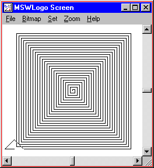
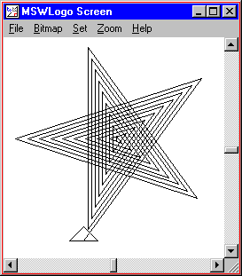
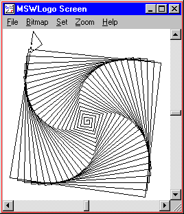
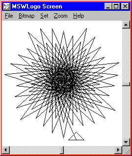
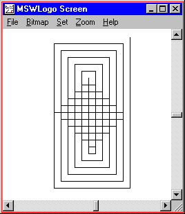
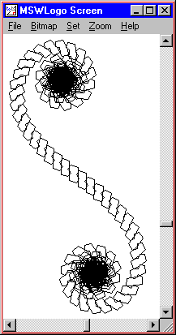

REPEAT 4 [ FORWARD 100 RIGHT 90 ]

In the first lesson, we used a command called "REPEAT" to draw a square one side at a time. In this lesson, we will use more advanced features of the REPEAT command to draw pictures that are much more interesting.
In Logo, a "loop" is something that the computer does many times over. Loops are useful when you want to draw something that has several parts, all of which look the same. For example, we can draw a square by "looping" the command "FORWARD 100 RIGHT 90" four times, as in:
REPEAT 4 [ FORWARD 100 RIGHT 90 ] |
|
While loops are useful when a problem has parts that look exactly the same, the real fun starts when loops are used to draw pictures with parts that look similar, but are NOT exactly the same. For example, to draw a square spiral, you can start at the center and repeatedly draw the edges of a square, making each edge a little longer than the previous one. You do this in Logo with the "REPCOUNT" loop counter. REPCOUNT is always equal to the number of times the loop has been run. It is 1 the first time the loop is run, 2 on the second, 3 on the third, and so on.
Here is a program that uses REPCOUNT to draw a square spiral.
REPEAT 100 [ FORWARD REPCOUNT * 2 RIGHT 90 ] |
 |
Activity:
Have you ever heard NASA count backwards just before they launch a space shuttle? It goes something like this: "10, 9, 8, 7, 6, 5, 4, 3, 2, 1, BLASTOFF". They call this a "countdown sequence". The thing that makes it a "sequence" is that the order of the numbers is important. "9, 5, 1, 3, 6, 10, 8, 7, 3, 2" is NOT a countdown sequence, even though it has all the same numbers.
The square spiral procedure multiples "REPCOUNT" by 2. This turns the sequence <1, 2, 3, 4, 5,...> into <2, 4, 6, 8, 10, ...>. You can do a little math to turn the <1, 2, 3, 4, 5, ...> sequence into any other sequence that you want. For example, to get NASA's countdown sequence you could use "11 - REPCOUNT", as in:
REPEAT 10 [ PRINT 11 - REPCOUNT ] PRINT "BLASTOFF
Can you figure out how to get the sequence of numbers from 10 to 20? How about all odd numbers from 1 to 19? How about multiples of 7 between 14 and 77?
Activity: Experiment with REPEAT and REPCOUNT to create your own interesting pictures. You can start with any sample program that uses REPEAT and modify the loop to use "REPCOUNT" or you can write your own from scratch.
TO STARSPIRAL REPEAT 45 [ FORWARD REPCOUNT * 5 RIGHT 144 ] END STARSPIRAL |
 |
TO SQUIRAL REPEAT 100 [ FORWARD REPCOUNT * 2 RIGHT 91 ] END SQUIRAL |
 |
TO EXPLOSION REPEAT 120 [ FORWARD REPCOUNT * 2 RIGHT 204 ] END EXPLOSION |
 |
TO PATTERN
REPEAT 22 [
RIGHT 90
FORWARD 110 - REPCOUNT * 10
RIGHT 90
FORWARD REPCOUNT * 10
]
END
PATTERN
|
 |
TO SSHAPE
REPEAT 750 [
RIGHT 90
REPEAT 4 [ FORWARD REPCOUNT * 3 RIGHT 72 ]
RIGHT REPCOUNT
]
END
SSHAPE
|
 |
REPEAT 100 [FD REPCOUNT RT X]
draws a "stable" picture--it looks like the same shape inside itself.
Others values (for example, 91) draw "twisty" pictures.
What makes a value stable?
What makes it twisty?
Is there a limit to the number of stable pictures can you draw with this pattern?